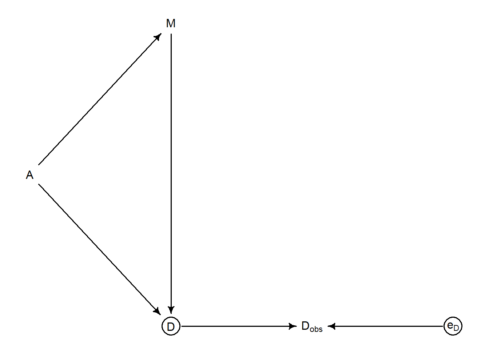
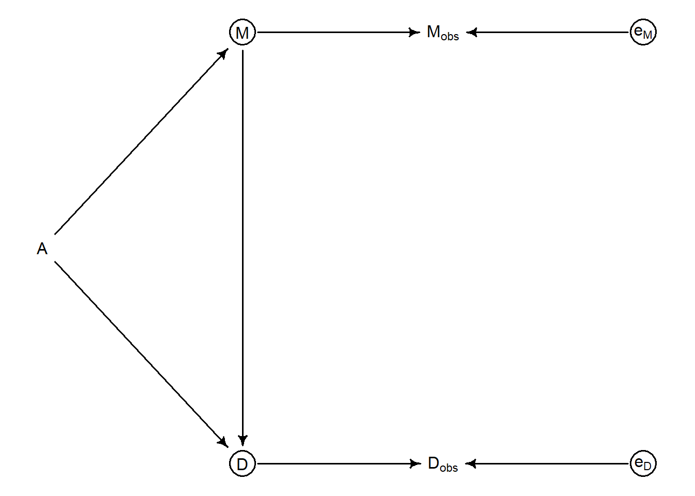
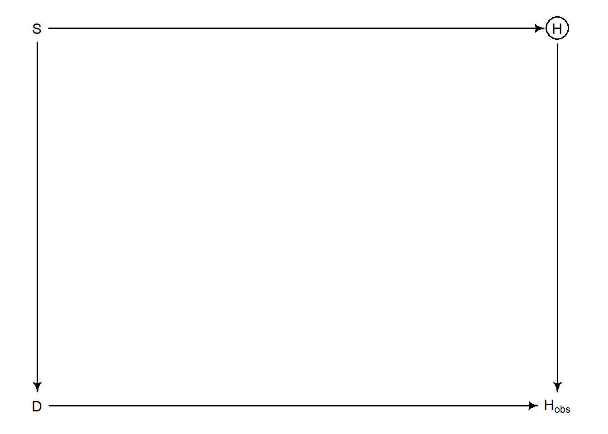

Chapter 15 Missing Data and Other Opportunities
15.1 Chapter Notes
Measurement Error
We want to build models that allow for measurement error. The book returns to the Waffle House / Divorce example from chapter 5. Both the marriage and divorce columns in the data come with standard errors that we did not make use of back when we first saw this example. The plot on the left here is a straightforward plot of the data, including error bars, on divorce against age of marriage. There’s one data point per U.S. state.
The plot on the right is meant to demonstrate that the standard error is much larger for states with small populations as you’d expect. This is important, because variation in the size of the error among states is likely to introduce biases.
In order to motivate the approach to incorporating measurement data, the chapter draws the following graph of the data generating processes:

As usual, variables in circles are unobserved. Here the DAG assumes that the marriage rate (\(M\)) and age at marriage (\(A\)) influence the divorce rate (\(D\)). But we don’t observe the divorce rate, we observe \(D_obs\) which is also influenced by measurement error \(e_D\). We can attempt to recover \(D\) by assuming a distribution for it, and assigning it a parameter in our model with a specified error. E.g:
\[ D_{\text{OBS},i} \sim \text{Normal}(D_{\text{TRUE},i},D_{\text{SE},i}) \]
Our model will look like this:
\[ \begin{aligned} D_{\text{OBS},i} &\sim \text{Normal}(D_{\text{TRUE},i},D_{\text{SE},i}) \\ D_{\text{TRUE},i} &\sim \text{Normal}(\mu_i,\sigma) \\ \mu_i &= \alpha + \beta_A A_i + \beta_M M_i\\ \end{aligned} \]
Here’s the posterior for (some of) the model parameters:
## mean sd 5.5% 94.5% n_eff Rhat4
## a -0.05604315 0.09815946 -0.2131211 0.1010110 1555.4378 0.9994692
## bA -0.61774701 0.16306287 -0.8669412 -0.3612279 989.0135 1.0027799
## bM 0.04557230 0.16689614 -0.2227070 0.3179405 1128.1817 1.0005704
## sigma 0.59257881 0.10724280 0.4310783 0.7785063 722.5359 1.0001266Compared to the chapter 5 model, \(bA\) has almost halved. In this case the impact of measurement error was to exaggerate the effect of marriage age on divorce. However you can’t assume that measurement error will always increase the effects of interest, sometimes it can obscure them. Endnote 223 points to some papers on this.
What if there is also measurement error on the predictor variables e.g. marriage rate? Here’s the DAG:

and here’s the model:
\[ \begin{aligned} D_{\text{OBS},i} &\sim \text{Normal}(D_{\text{TRUE},i},D_{\text{SE},i}) \\ D_{\text{TRUE},i} &\sim \text{Normal}(\mu_i,\sigma) \\ \mu_i &= \alpha + \beta_A A_i + \beta_M M_{\text{TRUE},i}\\ M_{\text{OBS},i} &\sim \text{Normal}(M_{\text{TRUE},i},M_{\text{SE},i}) \\ M_{\text{TRUE},i} &\sim \text{Normal}(0,1) \\ \end{aligned} \]
Standardising the observed marriage rate helps us choose a sensible prior distribution for the true marriage rate. Although later in the chapter (and in an exercise) a prior more informed by the data generating process is trialled.
Revisit: Fit the model, plot figure 15.3.
Missing Data
Sometimes data is simply missing. We want a principled approach that considers the data generating process.
The chapter introduces a simple example about dogs eating homework to demonstrate:

\(S\) is the amount a student studies. It influences homework quality. \(D\) is whether a dog has eaten the homework. \(H_\text{obs}\) is the quality of observed homework. It is influenced by true homework quality, but is missing in cases when \(D\)=1 (i.e. a dog has eaten the homework). There are four possible generative processes discussed.
Until I figure out how to caption dagitty objects, let’s call these (a), (b), (c), (d) going from the top left corner to the top right, bottom right then bottom left.
- Dogs eat homework at random
- Dogs eat the homework of students who study a lot (not paying enough attention to the dog)
- Noisiness (\(X\)) influences both homework quality and tendency for homework to be eaten
- Dogs prefer to eat bad homework
In the first case (a), because whether the dogs eat the homework at random, H is independent of D and so we wouldn’t expect the dogs to change the inferences we make about the effect of \(S\) on \(H\).
The second case (b) is also not so bad. There is a backdoor path from \(D\) to \(H\) through \(S\), but since we want to condition on \(S\) anyway it’s not terrible.
In both of these cases, the exercises include comparison of inferences made with complete data and when some data is missing (eaten).
The main body of this chapter gives a fuller treatment to scenarios (c) and (d), where things get trickier. We simulate some data:
set.seed(501)
N <- 1000
X <- rnorm(N)
S <- rnorm(N)
H <- rbinom( N , size=10 , inv_logit( 2 + S - 2*X ) )
D <- if_else( X > 1 , 1 , 0 )
H_obs <- H
H_obs[D==1] <- NAWhat’s happening here:
- Homework is a binomial variable with 10 trials, where the probability of success is increased by \(S\) and decreased by \(X\). The chapter says that “the true coefficient on S should be 1.00.” but I don’t understand why.
- If \(X\) is greater than 1, the dog eats the homework. Increased noise is therefore associated both with worse quality homework and missing homework.
Here’s a summary of the posterior parameter distributions we get assuming we can see \(H\) directly:
## mean sd 5.5% 94.5% n_eff Rhat4
## a 1.1128840 0.02392241 1.0761494 1.1514411 1221.785 1.003241
## bS 0.6891082 0.02562531 0.6482949 0.7303994 1212.296 1.000231Now here’s the outcome of the same model where the missing cases are simply dropped:
## mean sd 5.5% 94.5% n_eff Rhat4
## a 1.7948496 0.03578085 1.7380078 1.850438 927.8955 1.000555
## bS 0.8274926 0.03330760 0.7749454 0.882055 872.6053 1.002531We can see that \(bS\) is now closer to the true value of 1. This is because on average homework is missing from noisy houses, and it’s usually noisy houses where our estimate of the effect of studying is confounded. In this case the missingness made our inference easier, but in another scenario it could easily make things worse.
In scenario (d) dogs prefer to eat bad homework. But the variable causes its own missingness through the non-causal path \(S \rightarrow H \rightarrow D \rightarrow H_{obs}\). This is the most difficult situation to deal with.
The next section of the chapter applies the above to the problem of imputing missing data in the primate milk example from earlier in the book. Revisit.
15.2 Questions
Further Reading
Endnote 225: “See Molenberghs et al. (2014) for an overview of contemporary approaches, Bayesian and otherwise”
Endnote 226: “In ecology, the absence ofan observation ofa species is a subtle kind of observation. It could mean the species isn’t there. Or it could mean it is there but you didn’t see it. An entire category of models, occupancy models, exists to take this duality into account.”